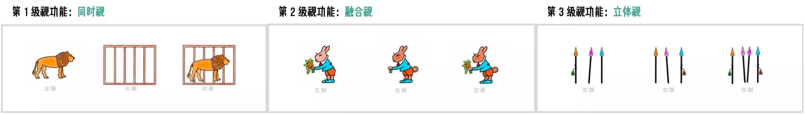

近视与双眼视功能异常常相伴出现：近视儿童中查出调节、集合功能异常并不少见，但不同研究因诊断标准不同，检出率差异很大。
规范的视功能训练可以改善调节与集合功能、减轻视疲劳和阅读不适；但它不能降低近视度数、不能缩短眼轴，延缓近视进展的证据也不充分。
2024 年全国学生总体近视率
（较 2020 年 52.7% 下降）
2024 年高中生近视率
（初中生 69.7%、小学生 34.3%）
未矫正近视儿童非斜视性双眼视异常检出率
（广州门诊 156 名 6~12 岁屈光不正儿童，2007）
数据来源：全国学生总体近视率 50.3%、高中生 81.0% 分别出自《国家人权行动计划（2021—2025 年）》实施评估报告与 2026 年国民视觉健康科普行动（范先群院士，人民网）；71.4% 出自贾惠莉、廖瑞端等《学龄儿童屈光矫正前后非斜视性双眼视异常研究》（中国实用眼科杂志，2007, 25(9): 1001-1002，DOI: 10.3760/cma.j.issn.1006-4443.2007.09.021）——暨南大学深圳眼科医院与中山大学附属第一医院眼科门诊随机抽取的 156 名 6~12 岁屈光不正儿童，依据 Morgan 正常值及 Sheard、Percival 准则综合判定。该数值反映的是屈光矫正前的状态；同一研究发现，标准屈光矫正后非斜视性双眼视异常检出率明显低于矫正前（χ²=23.376，P<0.05），因此首要步骤是规范验光配镜，之后再评估是否需要视觉训练，而非相反。该研究为 2007 年单中心门诊样本，年代较早且样本量有限，国内尚缺乏一般近视儿童"合并任一类型双眼视功能异常"的全国流调数据，此数值仅供参照。
长时间、高强度近距离用眼是近视发生发展的重要环境因素
视疲劳常表现为眼酸、胀痛、阅读不耐受，与近距离负荷相关
视功能不仅指"视力"（看清远处物体的能力），更包括双眼协调、聚焦、追踪等动态能力，如同身体的"运动功能"。
调节滞后：看近时实际动用的调节少于需求，焦点落在视网膜后方，形成远视性离焦。它长期被视为近视进展的推手，但 CLEERE 纵向研究发现，调节滞后多在近视发生之后才增大，更可能是结果而非原因。
调节灵活度不足：远近切换时调节反应慢、不灵敏，看远看近转换时短暂模糊，容易疲劳。
集合不足：看近时双眼内聚能力不够（集合近点变远、正融合聚散下降），出现复视、眼胀、串行、易漏行。境外学龄儿童研究按严格诊断标准报告约 2%~7%；国内四川南充 2571 名小学生筛查显示总体患病率 12.4%，其中近视学生达 37.4%、非近视学生仅 4.15%。不同研究诊断标准不同，数值差异较大，但一致提示：近视与集合不足常相伴出现，是青少年视疲劳的常见原因之一。
集合过度：看近时内聚过强，眼部发紧、酸痛，近距离工作难以持久。
把两只眼的图像合成为单一立体影像、并长时间维持的能力不足，直接影响立体视、阅读舒适度与持久性。

调节幅度、调节灵活度、隐斜、集合近点、融合聚散等检查是判断双眼视功能是否异常的依据
视觉训练针对的是"功能"层面的问题——让调节更准、集合更稳、双眼协同更持久。它不缩短眼轴，也不改变角膜曲率，不能替代户外活动、角膜塑形镜、离焦镜片、低浓度阿托品等有循证依据的近视控制措施。
目标：减小调节滞后，提升调节幅度与调节灵活度。
原理：用翻转拍、远近交替注视等方式给眼睛可控的调节负荷，让看近时的调节反应更充分、切换更灵敏，近距离用眼更清晰、更持久。
目标：建立舒适、持久的双眼协同工作能力。
证据：这是视觉训练证据最扎实的一块。CITT 随机对照试验（221 名 9~17 岁有症状集合不足儿童，12 周）显示，诊室聚散／调节训练＋家庭巩固约 73% 明显改善，家庭笔尖训练约 43%、安慰剂约 35%；Cochrane 综述同样支持诊室训练优于家庭训练。
直接效果：视功能改善后，同等近距离负荷下眼部更省力，眼酸、胀痛、头痛、阅读不耐受等症状减轻，主观症状评分下降。
证据现状：温州医科大学团队对 152 名 7~9 岁近视儿童随访至小学毕业，未发现基线双眼视功能参数与近视进展速度相关；多项研究也未发现调节滞后能预测近视发生或进展。国家疾控局 2023 年科普明确把"做视远视近的调节功能训练"列为预防近视的错误做法之一。因此视觉训练不应被当作近视控制手段来宣传。
眼酸、胀痛、头痛、阅读不耐受等症状减少，连续近距离用眼的耐受时间延长——有症状的集合不足儿童改善最为确切。
集合近点、正融合聚散、调节灵活度等可测量指标改善（CITT 研究中集合近点由 13.7 cm 缩短至 4.5 cm，正融合聚散由 12.5△ 提高到 31.8△）。
读得久、串行少、主观舒适度提高；至于能否转化为学习成绩提升，目前证据有限。
孩子近视后不应只满足于配一副眼镜。到具备视功能检查能力的医疗机构，把调节幅度、调节灵活度、隐斜、集合近点、融合聚散等查全，再判断是否需要训练。
训练需要时间与坚持，不会立竿见影。它练的是"功能"而非"度数"：训练后裸眼视力变好，常常来自大脑对模糊的适应，并不等于近视度数下降。
训练要融入日常用眼管理：每天日间户外活动 2 小时、遵守"20-20-20"法则、保持"一尺一拳一寸"、保证照明与睡眠。这些才是近视防控的基本盘。
由眼科医师或专业视光师评估并制定方案，定期复查眼轴与度数。凡是承诺"包摘镜""度数必降"的，都应保持警惕，具体请遵医嘱。
面对青少年近视，我们应从被动的"矫正视力"转向主动的"管理视觉健康"。
对确实存在视功能异常的青少年，规范的视觉训练可以改善调节与集合功能、减轻视疲劳、提升阅读舒适度；但它不能降低度数、不能缩短眼轴。
把户外、行为与循证医疗手段作为主线，把视功能评估与训练作为补充，早筛查、早诊断、规范复查，方能更好地守护孩子的光明未来。